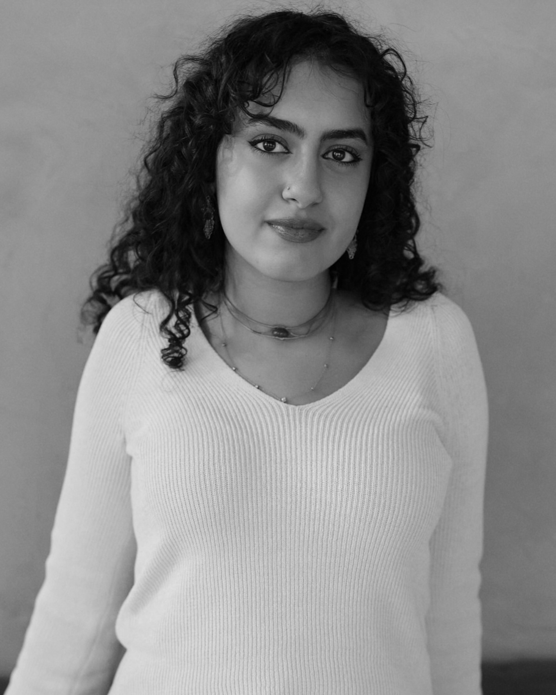

Nadia Othman resume work about

Hi! I'm Nadia. I'm an Egyptian-American audio engineer and musician from New York. I graduated from New York University with a Bachelor of Music in Music Technology in 2024, where I completed a senior capstone project researching room acoustics. I currently do a variety of work in sound design, theater tech, and electronics.
My love for audio derived from years spent as a performer. I was a huge choir and opera kid before exploring more contemporary genres in college, and I am always eager for opportunities to continue singing and performing. I also play intermediate level piano, and am currently exploring the oud!
I am always eagerly looking for opportunities in anything audio or music! Reach me at nadiao.sound@gmail.com